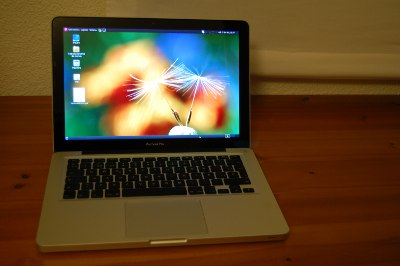

Debian 6 (Squeeze) on Macbook Pro 7,1
Published onIntroduction
When I bought my Macbook Pro on January 2011 I decided to install Ubuntu 10.04 on it. After a month I replaced its hard drive with an SSD. Wow! The performance now it's superb when opening programs and doing IO tasks. Sadly I couldn't install Ubuntu 10.04 on this computer with the new hard drive. I tried several times but the X didn't start and I was getting other strange errors which I couldn't solve. That's why I tried to install Debian on it... and I made it!
{kind=link}
First, make sure you own the 7,1 Macbook Pro model. If you don't own it I don't recommend you to follow this guide.
To get the version in OS X, click on the Apple on the top left, then
About this Mac > More Info... and see the generation in the Model Identifier row.
To get the version in GNU/Linux:
# dmidecode -s system-product-name
MacBookPro7,1
This blog comments that it's not possible to install this Debian version due to a bug in the CD-ROM. However it was possible for me to do so.
Installation
Follow the installation proccess normally. I formatted my root partition to ext3. I haven't tested ext4 but it should work good too. When you reach the step of installing grub, do not install it at /dev/sda. You have to install it in the same partition where Debian is installed, so please, take note of the root name of your Debian partition. For example I had to install Grub in /dev/sda4, but remember that your partition root may be different.
When the installation finished and the computer has rebooted, in the Refit menu go to "Start Partitioning Tool" and say yes to the resynchronization question. Then shutdown, boot the computer up and select the Tux penguin.
Shutdown & Reboot
The system shutdowns or reboots after 3 minutes. A bug?
Keyboard
In order to use 3rd level keys like Alt + Key, you have to go to:
Preferences > Keyboard > Key to choose 3rd level
Sound
It works out of the box, and the microphone as well, however Skype doesn't get any sound from the microphone.
Microphone (Skype)
The tricky part I've found is to install Pulseaudio. It seems that Skype doesn't get along with ALSA. The issue is that the mic records only on the right channel by default and skype catches only the left channel.
# apt-get install libasound2-plugins pulseaudio paman padevchooser paprefs pavucontrol pavumeter
/etc/asound.conf:
pcm.pulse {
type pulse
}
ctl.pulse {
type pulse
}
pcm.!default {
type pulse
}
ctl.!default {
type pulse
}
Then run paman, open Devices tab, select alsa_input.pci source, click Properties and change microphone volume. I'm using value 300%. If you are using Skype, don't forget to turn off automatic volume adjusting in Skype deselecting:
Options > Sound Devices > Allow Skype to automatically adjust my mixer levels
Pommed
If you push the button to turn up/down the volume and every step is too big, you can change it in pommed config.
# apt-get install pommed
Go to /etc/pommed.conf and edit audio:
# step value (1 - 50%) step = 1 # beep on volume change beep = no # mixer element for volume adjustment volume = "Master"
Turn up volume of Front speaker.
Screen backlight
There are 2 ways of making screen backlight work with keyboard F1 and F2 keys depending on your software configuration.
Nouveau drivers
If you are using the default driver (Nouveau), you just have to install pommed:
# apt-get install pommed
NVidia drivers
If you are using the NVidia driver, then you must install the NVidia backlight support. Although it's a deb package for Ubuntu, it perfectly works in Debian:
$ cd /tmp $ wget -c https://launchpad.net/~mactel-support/+archive/ppa/+files/mbp-nvidia-bl-dkms_0.25.4~lucid_all.deb # apt-get install dkms # dpkg -i mbp-nvidia-bl-dkms_0.25.4~lucid_all.deb
Your keys should work properly. However keyboard light doesn't work as good as expected.
To make it work you have 2 options:
- Install my own compiled version of pommed for x86.
- Download pommed source, get this file and this file and place them in pommed/pommed replacing the old ones.
To finish, compile it and install it as normal and reboot.
Graphics
# apt-get install module-assistant nvidia-kernel-common
# m-a auto-install nvidia-kernel${VERSION}-source
# apt-get install nvidia-glx${VERSION}
# apt-get install nvidia-xconfig
# nvidia-xconfig
If this fails:
# /etc/init.d/gdm3 restart
(Go to tty1 using Alt+F1, login and then do)
# reboot
After rebooting, if the X are loaded properly and you get the following output, then it's properly working.
$ glxinfo | grep -i nvidia
server glx vendor string: NVIDIA Corporation
client glx vendor string: NVIDIA Corporation
OpenGL vendor string: NVIDIA Corporation
OpenGL version string: 3.2.0 NVIDIA 195.36.31
OpenGL shading language version string: 1.50 NVIDIA via Cg compiler
Wireless
Wired network works properly, however we need to make some extra work to make wifi working.
First, check what model does the MBP have:
# lspci | grep -E "Atheros|Broadcom"
02:00.0 Network controller: Broadcom Corporation BCM4322 802.11a/b/g/n Wireless LAN Controller (rev 01)
03:00.0 Ethernet controller: Broadcom Corporation NetXtreme BCM5764M Gigabit Ethernet PCIe (rev 10)
Add a "non-free" component to /etc/apt/sources.list:
# Debian Squeeze (testing) deb http://ftp.es.debian.org/debian/ squeeze main contrib non-free deb-src http://ftp.es.debian.org/debian/ squeeze main contrib non-free
Update the list of available packages. Install the module-assistant and wireless-tools packages:
# apt-get update # apt-get install module-assistant wireless-tools
Command by command:
- Build and install a broadcom-sta-modules-* package for your system, using Module-Assistant
- Blacklist the brcm80211 module, to prevent it conflicting for support of BCM4313, BCM43224 and BCM43225 devices
- Rebuild your initial ramdisk, to blacklist modules defined at /etc/modprobe.d/broadcom-sta-common.conf within initramfs
- Unload conflicting modules
- Load the wl module
# m-a a-i broadcom-sta # echo blacklist brcm80211 >> /etc/modprobe.d/broadcom-sta-common.conf # update-initramfs -u -k $(uname -r) # modprobe -r b44 b43 b43legacy ssb brcm80211 # modprobe wl
Now Wifi should work :)
Webcam
The iSight works out of the box.
Touchpad
Works. Side vertical scrolling is enabled by default, but two-finger scrolling and horizontal scrolling can be enabled through the mouse preferences. Single click works as expected (tap or press); right click is a tap or press with two fingers, and middle click (paste) is a tap or press with three fingers, and click and drag is a click and slide.
On mouse preferences, disabling the touchpad while typing on the keyboard is a good idea.
Suspend/Hibernate
Hibernate and suspend don't work.
Sensors
The module coretemp need to be loaded during the boot, so add it at the end of /etc/modules:
# echo "coretemp" >> /etc/modules
HFS
By default, Debian can read your Mac partition data, however it's not possible to write data on it. Go on with the following instructions to make this partition writable.
In Mac OS, disable journaling to allow writes from Debian. In my case my volume is called "Mac".
$ sudo /usr/sbin/diskutil disableJournal /Volumes/Mac
Install some packages and try to mount the Mac OS partition (mine is sda2):
# apt-get install hfsutils hfsplus # mkdir /media/Mac # mount -t hfsplus /dev/sda2 /media/Mac
$ ls -l /dev/disk/by-uuid/
lrwxrwxrwx 1 root root 10 ene 31 10:00 f6f53b6f-6828-33c4-98ad-1ad94883895e -> ../../sda2
Add to /etc/fstab something like this, but replacing my values with your UUID got in last command:
UUID=f6f53b6f-6828-33c4-98ad-1ad94883895e /media/Mac hfsplus rw,exec,auto,users 0 0
FireWire
Can't test it. Write me an email if you made it work.
CardReader
Works out of the box.
Apple Remote Control
Can't test it. Write me an email if you made it work and how.
External Monitor
Can't test it. Write me an email if you made it work and how.
Bluetooth
Works out of the box.